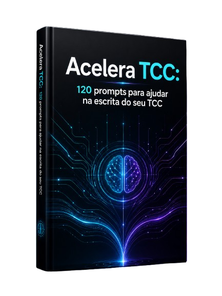
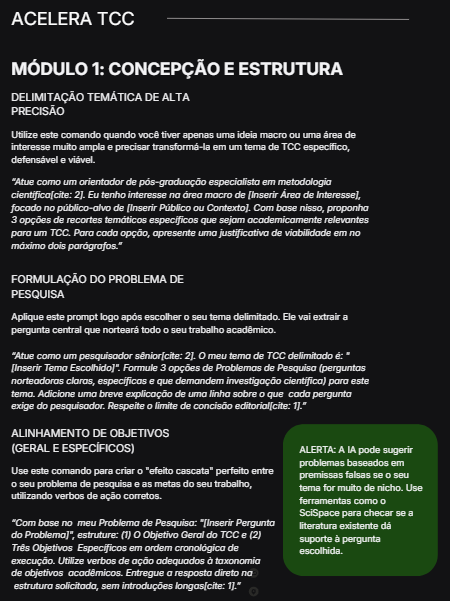
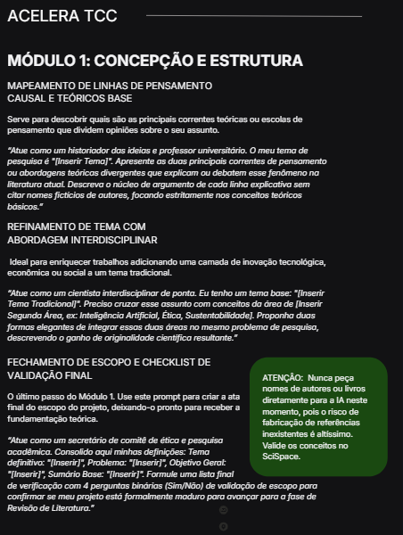
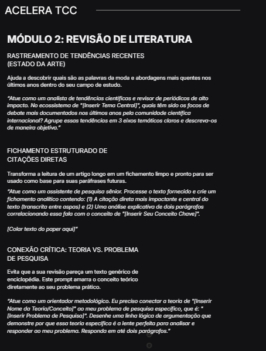
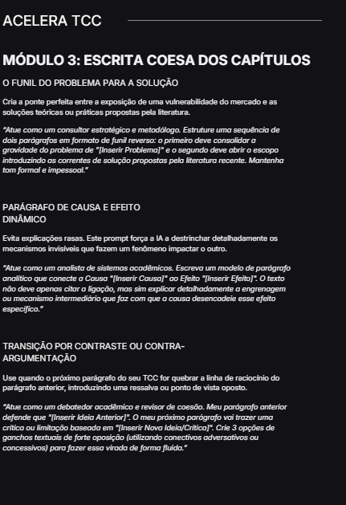
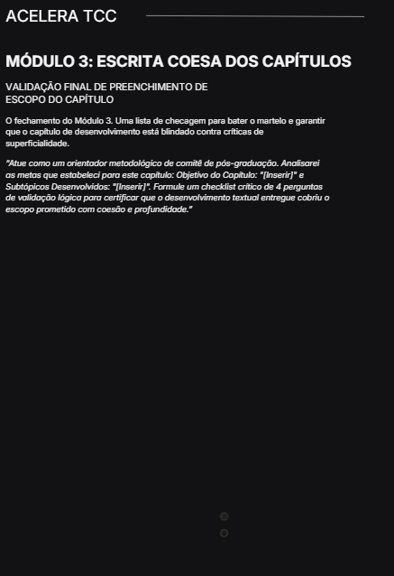
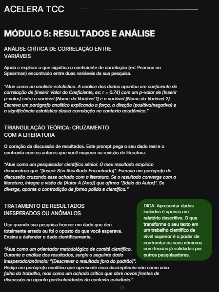

Chega de encarar a folha em branco ou depender de geradores genéricos. Domine o manual definitivo de IA para transformar meses de angústia em dias de escrita fluida, ética e blindada.

Um manual estratégico estruturado em formato "Copia e Cola" dividindo o seu desenvolvimento em etapas blindadas contra falhas.
Saia do zero absoluto. Prompts para delimitação temática com variáveis de alta precisão, criação de ganchos de impacto e estruturação de objetivos gerais e específicos.
Mapeie o estado da arte. Comandos avançados para extrair insights cirúrgicos de PDFs longos, simplificar conceitos complexos e criar matrizes de confronto teórico.
Desenvolvimento textual acelerado. Técnicas de roteirização de subtópicos, ganchos perfeitos de transição entre parágrafos e preenchimento estrutural em formato funil.
Desenho metodológico sem erros. Estruturação automática de abordagens qualitativas/quantitativas, critérios de amostragem e termos de consentimento formais.
Apresentação densa de dados. Modelos de leitura crítica de padrões, interpretação correta de jargões estatísticos e direcionamento analítico para a criação de gráficos.
Revisão final sênior. Técnicas sofisticadas de paráfrase (conversão de citações diretas para indiretas), ajuste cirúrgico de tom formal e eliminação de similaridades.
Economia de +100 Horas: Reduza drasticamente o tempo de pesquisa operacional e vá direto para o que importa.
Rigor Científico Intacto: Comandos calibrados sob a ótica de orientadores e revisores, mantendo a densidade teórica exigida.
Ética e Coautoria Segura: Instruções claras de validação metodológica para usar a IA como seu copiloto legítimo, mantendo a integridade intelectual.
"O maior erro do estudante é tratar ferramentas de IA como simples caixas de busca de texto. O segredo está na engenharia sênior de comandos."
Bruno Flores
Professor que orientou mais de 50 TCCs nota 10.
Ganta o acesso hoje e leve o ecossistema estratégico complementar sem custo adicional.
Esqueça a dor de cabeça com margens e citações. Aprenda a programar comandos para auditar e automatizar sua conferência de formatação.
Técnicas avançadas de humanização textual e refatoração para validar sua escrita e garantir 0% de similaridade inadequada em softwares de varredura.
Roteiros e simulações de perguntas agressivas da banca avaliadora. Prepare sua apresentação e antecipe todas as defesas de forma cirúrgica.
Ou apenas R$ 14,90 à vista no PIX ou Cartão.
Quero Garantir Minha Cópia do GuiaEsta oferta especial expira em:

Página 1

Página 6

Página 8

Página 12

Página 19

Página 30
"Eu estava travada há 3 meses no referencial teórico. Com as engenharizações de prompts do Módulo 2 consegui cruzar os autores sem nenhuma dor de cabeça e montei o capítulo inteiro em um fim de semana."
— Mariana S., Graduanda de Direito
"O bônus de anti-plágio e humanização de escrita vale o preço do e-book sozinho. Me deu a segurança necessária para submeter o relatório sem medo de falsos positivos nos softwares da faculdade."
— Ricardo M., Engenharia de Produção
"Faltavam pouquíssimos dias para o encerramento do prazo de entrega e eu não tinha nem os objetivos estruturados. Esse manual salvou meu semestre e meu diploma. Didática cirúrgica."
— Lucas F., Administração de Empresas
Fique 100% satisfeito ou peça seu dinheiro de volta. Você tem 7 dias inteiros para abrir o manual, copiar os comandos e aplicar no seu TCC. Se você achar que o método não serve para você, devolvemos cada centavo investido. Sem burocracias.
Sim. Os prompts foram desenhados com estruturas baseadas em variáveis adaptáveis. Eles funcionam injetando os seus dados e o seu tema, independentemente de ser área de Humanas, Biológicas ou Exatas.
Não. O guia foca em engenharia de coautoria ética. Você aprenderá a direcionar a IA para organizar ideias, estruturar fluxos e revisar textos sob o seu comando intelectual crítico, eliminando qualquer cópia mecânica direta.
Não é obrigatório. Os comandos rodam perfeitamente nos modelos gratuitos modernos do ChatGPT, Claude ou Google Gemini, aproveitando o máximo da capacidade das linguagens nativas.
O envio é imediato e 100% digital. Assim que o pagamento for confirmado (via PIX ou Cartão), os dados de acesso e o link de download direto do PDF serão enviados no seu e-mail cadastrado.
O manual é totalmente explicativo e conta com marcações visuais de 'Dicas' e 'Alertas' de engenharia, pensados exatamente para blindar você contra erros interpretativos comuns da inteligência artificial.